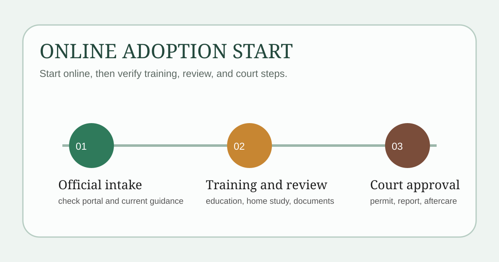

입양신청 온라인을 검색하면 “이제 온라인으로 된다”는 문구가 먼저 보이지만, 실제로는 어디에서 접수를 시작하는지, 어떤 단계는 여전히 직접 진행되는지를 같이 봐야 합니다. 입양은 단순 신청 폼 제출로 끝나는 절차가 아니라 교육, 조사, 법원 허가까지 이어집니다.
이 글은 보건복지부의 공적 입양체계 개편 보도자료, 현재 공개된 아동권리보장원 메인 안내, 입양 관련 법령 개정 이유를 기준으로 정리했습니다. 운영 화면과 세부 절차 문구는 보완될 수 있으므로, 실제 신청 전에는 아동권리보장원 메인 화면과 상담 안내를 다시 확인하세요.

지금 공식 자료에서 보이는 큰 변화
보건복지부는 2025년 7월 18일 보도자료에서 공적 입양체계 개편 시행을 안내하며, 예비양부모의 입양 신청 접수와 교육은 아동권리보장원에서 담당한다고 밝혔습니다. 같은 자료에는 예비양부모가 아동권리보장원에 입양을 신청하면 이후 가정환경조사와 자격 확인 절차가 이어진다고 설명합니다.
또 현재 공개된 아동권리보장원 메인 안내에는 입양신청, 입양신청 바로가기, 입양부모교육, 온라인 동영상 교육 문구가 함께 보입니다. 즉, 온라인 전환의 핵심은 접수와 안내의 출발점이 공식 시스템으로 모이는 것에 가깝고, 모든 절차가 화면 안에서 끝난다는 뜻으로 보면 안 됩니다.
예비양부모 자격은 무엇을 보나요?
입양 관련 법령 개정 이유와 보건복지부 설명을 함께 보면 아래 항목을 먼저 확인해야 합니다.
- 연령: 법령 개정 이유 기준 25세 이상
- 재산과 양육 여건: 양자를 부양하기에 충분한 재산과 양육 환경
- 범죄·중독 이력 제한: 아동학대, 가정폭력, 성폭력, 마약 등 관련 경력이 없어야 함
- 교육 이수: 아동권리보장원이 실시하는 교육 이수 필요
입양은 “마음이 있다”만으로 바로 진행되는 절차가 아닙니다. 자격과 교육 요건을 먼저 확인하고, 필요한 서류를 맞춰야 다음 단계가 이어집니다.
온라인으로 시작한 뒤 실제 절차는 어떻게 이어지나요?
보건복지부 보도자료와 현재 공개된 메인 안내를 함께 보면 큰 흐름은 아래처럼 이해하면 됩니다.
- 아동권리보장원 접수 창구 확인: 현재 운영 중인 신청 경로와 안내사항 확인
- 기본 자격 및 서류 확인: 연령, 양육 여건, 범죄경력 제한, 기본 증명서류 점검
- 가정조사 및 교육: 교육 이수, 가정환경 조사, 자격 확인
- 결연과 법원 단계: 아동과 결연 후 가정법원 입양허가 신청
- 입양신고와 사후관리: 허가 후 친양자 입양신고, 이후 1년 사후서비스
여기서 중요한 포인트는 법원 허가 단계가 남아 있다는 점입니다. “온라인 신청”은 출발점이지 절차 전체의 단순화를 뜻하지는 않습니다.
현재 공개 자료를 볼 때 주의할 점
공식 자료를 함께 보면 공통적으로 아동권리보장원 중심의 접수·교육, 법원 허가, 아동 최우선 원칙이 강조됩니다. 다만 실제 운영 단계에서는 제출서류 명칭이나 접수 화면 구성이 바뀔 수 있습니다.
따라서 실제 신청 전에는 아동권리보장원의 현재 신청 화면, 상담 연락처, 최신 보건복지부 안내를 함께 확인해 지금 시점의 적용 절차를 다시 확인하는 편이 안전합니다.
온라인 신청이라고 해도 남는 오프라인 단계는 무엇인가요?
가장 큰 부분은 가정환경 조사와 가정법원 허가입니다. 보건복지부 보도자료도 온라인 접수만 강조하는 것이 아니라, 이후 조사와 자격 확인, 위탁기관 협력, 분과위원회 심의를 함께 설명합니다.
그래서 “온라인 신청 가능”을 모든 단계 비대면 완료로 이해하면 실제 진행에서 혼란이 생길 수 있습니다. 상담, 조사, 법원 단계는 별도 준비가 필요하다고 보는 편이 맞습니다.
신청 전에 준비하면 좋은 체크리스트
- 부부 또는 가족 내 충분한 합의
- 기본 자격과 범죄경력 관련 요건 점검
- 교육 일정 참여 가능 여부 확인
- 가족관계증명서, 혼인관계증명서, 주민등록등본 등 기본 서류 준비
- 아동권리보장원 신청 화면과 상담 전화로 최신 절차 재확인
한 번에 요약하면
- 보건복지부는 공적 입양체계 개편 이후 예비양부모 신청 접수와 교육을 아동권리보장원에서 담당한다고 안내합니다
- 현재 아동권리보장원 페이지에는 입양신청, 입양부모교육, 절차 안내가 공개돼 있습니다
- 다만 실제 절차는 교육, 가정조사, 법원 허가, 입양신고까지 이어집니다
- 온라인 전환은 시작점의 정리로 이해하고, 최종 절차는 최신 운영 안내를 다시 확인하는 편이 안전합니다
자주 묻는 질문
Q. 이제 입양은 전부 온라인으로 끝나나요?
아닙니다. 공식 자료 기준으로 온라인 접수와 안내 창구가 정리된 것이 핵심이고, 교육, 가정조사, 법원 허가 단계는 별도로 이어집니다.
Q. 예비양부모 교육은 꼭 받아야 하나요?
관련 법령 개정 이유에는 양부모가 되려는 사람은 아동권리보장원이 실시하는 교육을 이수하도록 한다는 취지가 명시돼 있습니다.
Q. 가장 먼저 어디를 열어보면 되나요?
아동권리보장원 입양신청 및 입양절차 페이지를 먼저 열고, 필요하면 상담 연락처로 현재 적용 절차를 다시 확인하는 편이 좋습니다.
공식 링크
입양 절차는 공적 체계 개편에 따라 운영 안내가 보완될 수 있습니다. 서류 제출이나 상담 예약 전에는 위 공식 페이지의 최신 문구와 운영 화면을 다시 확인하세요.